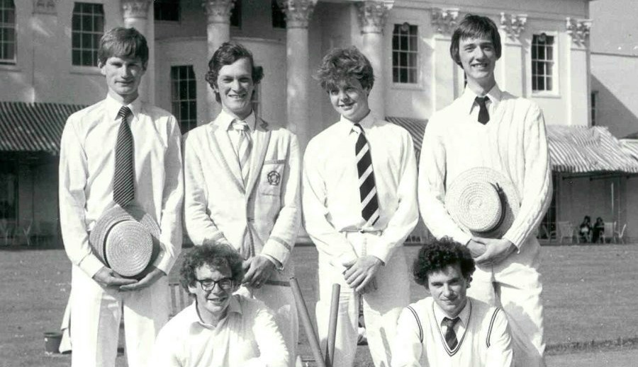
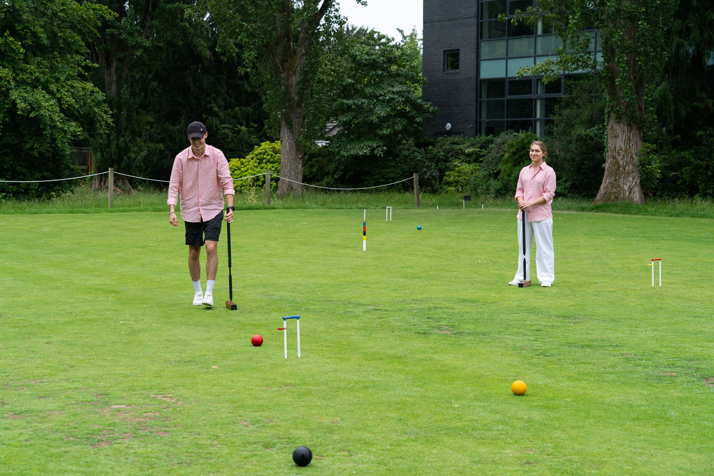

College competition
Croquet Cuppers
OUACC runs Oxford’s inter-college croquet competition, bringing teams together from across the University.
Explore CuppersPlay on the University Parks lawns, learn from experienced players, compete for Oxford and take part in one of the University’s oldest sporting traditions.
OUACC brings together complete beginners, regular players and experienced competitors. Members have access to full-size lawns, Club equipment, coaching and a programme of matches and competitions.
OUACC runs Oxford’s inter-college croquet competition, bringing teams together from across the University.
Explore Cuppers
Each year the Club fields an Oxford team for the Varsity Match against Cambridge at the Hurlingham Club.
Explore Varsity
Start with introductory coaching, join Club evenings, enter competitions and progress at your own pace.
Learn the gameThe Club’s courts are in the University Parks. Members can book courts, use Club equipment and play throughout the season, subject to fixtures and coaching.
Find us
Membership options, practical information and joining instructions are available here.